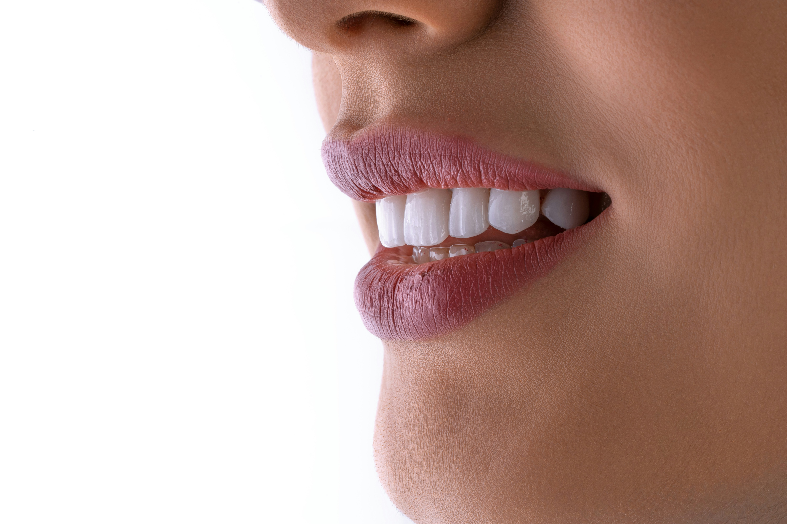
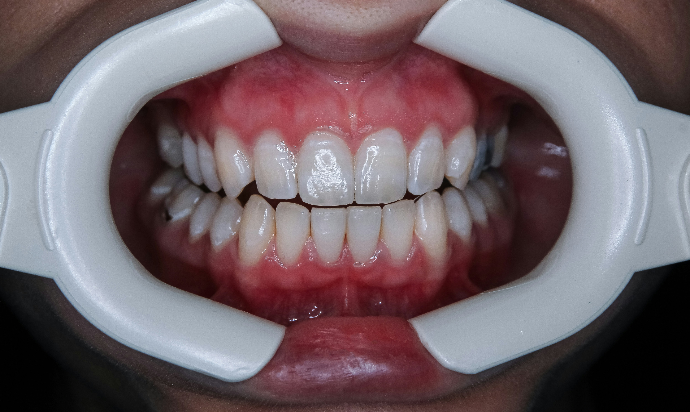

★★★★★
"My teeth were several shades brighter after just one visit! The whole thing was quick and completely comfortable. I can't stop smiling."
Cosmetic Dentistry
Safely remove years of stains and brighten your smile by several shades — a quick, professional way to look and feel more confident.


Professional teeth whitening is a safe, dentist-supervised treatment that uses a controlled whitening gel to break down stains and lighten the natural colour of your teeth by several shades.
Over the years, teeth pick up stains from tea, coffee, tobacco, red wine, and simply from ageing. A whitening gel — far stronger and safer than over-the-counter kits — is applied to your teeth and often activated with a special light to speed up the process.
Because it's carried out by a dentist, your gums and enamel are protected throughout, giving you noticeably brighter results in a single visit with none of the guesswork of home kits.
Not all whitening is equal. Professional, dentist-supervised whitening offers benefits that shop-bought products simply can't match:
Store-bought strips and kits are convenient, but they work very differently from professional whitening. Here's how they compare:
| Feature | Over-the-Counter Kits | In-Clinic Whitening |
|---|---|---|
| Strength | Mild, low-concentration gel | Professional-grade gel for dramatic results |
| Speed | Takes weeks of daily use | Visible results in a single visit |
| Evenness | Often patchy or uneven | Uniform, natural-looking shade |
| Safety | Risk of gum irritation and sensitivity | Gums protected and supervised by a dentist |
| Guidance | No professional check beforehand | Teeth and gums assessed before treatment |
For safe, reliable, and long-lasting results, in-clinic whitening is the clear choice. Dr Deepesh Agrawal will confirm you're a good candidate during your consultation.
In-clinic whitening is quick, comfortable, and usually completed in under an hour. Watch the short walkthrough below, then read what to expect at each stage.
A step-by-step look at how professional teeth whitening works.
Dr Agrawal examines your teeth and gums to make sure they're healthy and suitable for whitening. Your current shade is recorded so you can see the difference afterwards.
Any concerns — such as existing sensitivity or fillings on front teeth — are discussed so you know exactly what to expect.
Your teeth are gently cleaned to remove surface plaque so the gel can work evenly. A protective barrier is then placed over your gums and lips.
This preparation keeps the whitening gel exactly where it's needed and keeps your gums comfortable.
The professional whitening gel is carefully applied to the front surfaces of your teeth. In many cases a special light is used to activate and accelerate the gel.
You simply relax while the gel breaks down the stains within the enamel.
The gel is left on for a set time, then removed. Depending on your target shade, a few cycles may be repeated in the same visit for a brighter result.
Your teeth are then rinsed clean and the protective barrier is removed.
Your new, brighter shade is revealed and compared to your starting point. Dr Agrawal then shares simple aftercare tips to help your results last.
You leave with a noticeably whiter smile — and your treatment is complete.
A few simple habits will help your whitening results last as long as possible:
₹6,000 per arch
The cost of whitening depends on the method used, how many sessions you need, and the level of staining being treated. Because every smile is different, we provide an itemised, no-obligation quote after your consultation.
Professional whitening offers safe, dramatic, and long-lasting results — far better value than repeated home kits. Ask us about maintenance and touch-up options during your visit.
Prices are indicative and confirmed only after an in-person examination.
"My teeth were several shades brighter after just one visit! The whole thing was quick and completely comfortable. I can't stop smiling."
"Years of coffee stains gone in an hour. Dr Deepesh made sure there was no sensitivity and the result looks completely natural."
"Got my teeth whitened before my wedding and the results were stunning. Clean clinic, friendly staff, and transparent pricing."
Yes. When carried out by a dentist, whitening is very safe. Your gums are protected and the process is supervised throughout, minimising any risk to your enamel or gums.
Some people experience mild, temporary sensitivity for a day or two after whitening. This usually settles quickly, and we take steps to keep you comfortable during and after treatment.
Results typically last from several months to a couple of years, depending on your diet and habits. Avoiding staining foods and tobacco, plus occasional touch-ups, keeps your smile bright longer.
Whitening only affects natural tooth enamel — it won't change the colour of existing fillings, crowns, or veneers. We'll discuss options if these are visible in your smile.
Most people lighten by several shades. The exact result depends on your starting shade and the type of staining. We aim for a bright but natural-looking result.
Most adults with healthy teeth and gums are suitable. A quick examination confirms whether whitening is right for you or if another option would suit better.
Book a whitening session with Dr Deepesh Agrawal and reveal a noticeably brighter smile — with a clear, personalised plan and quote.
Malviya Dental Assistant
Powered by AI